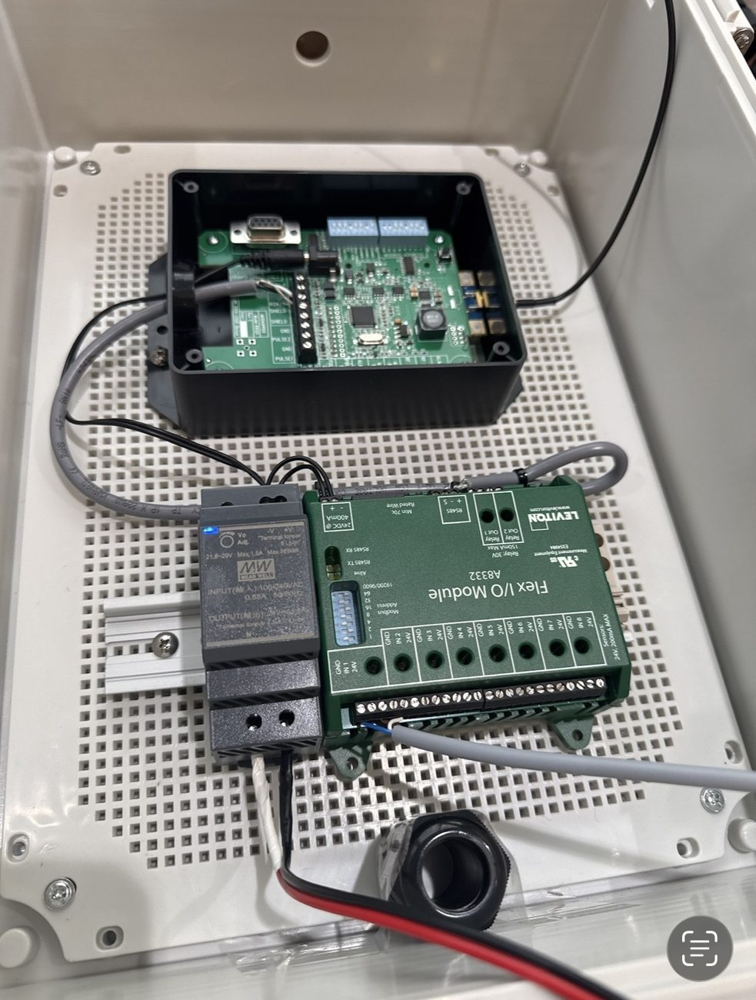
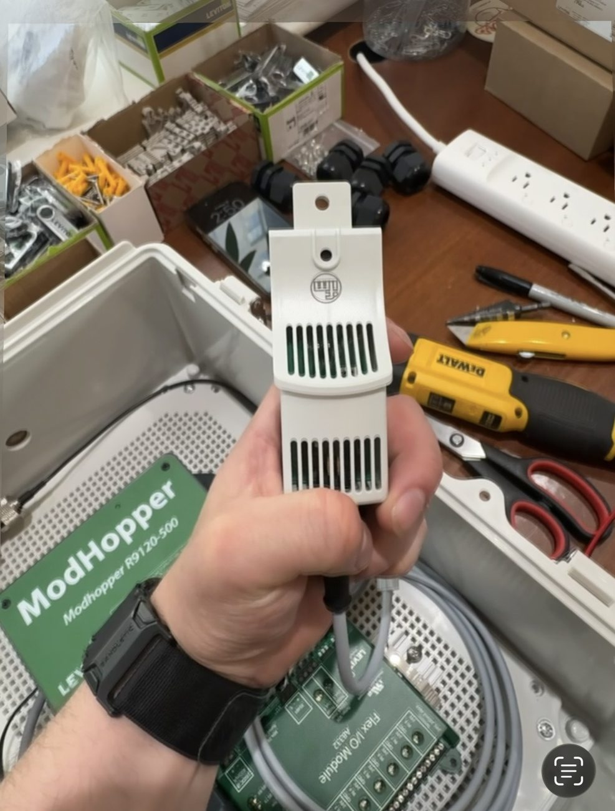

01 / ASSESS
Survey & prepare
Participate in site surveys; identify installation locations, equipment quantities, wiring needs, CTs and any site-specific sensors or antennas.
A look at the physical integration and field deployment of commercial energy-monitoring systems, from workbench provisioning to commissioning support and fault remediation.
← Return to portfolioAt Sapient Industries, my primary contribution is hands-on integration and deployment of monitoring equipment. I collaborate with teammates responsible for product planning, networking, software, commissioning and data analysis.
Participate in site surveys; identify installation locations, equipment quantities, wiring needs, CTs and any site-specific sensors or antennas.
Mount components within enclosures, route and terminate low-voltage wiring, assemble power and communications hardware, and help test the equipment prior to shipment.
Work alongside contracted electrical teams to instrument panels and install field equipment. Investigate installation faults or data anomalies alongside commissioning colleagues.
Photographs of equipment during preparation and assembly—not finished product beauty shots. Client-site electrical-panel photographs are deliberately excluded pending clearance for public use.


My responsibilities are concentrated in the physical systems layer: preparing devices, integrating monitoring enclosures, installing meters and current transformers, and diagnosing installation or equipment faults. I also contribute to installation-partner training, project coordination and post-deployment support.
I have performed commissioning and monitoring-data verification, although these activities are primarily led by another member of our team. My role often involves correcting the hardware, CT placement, wiring or connectivity issue that data validation brings to light.
See my broader infrastructure experience and technical writing, or connect through LinkedIn.